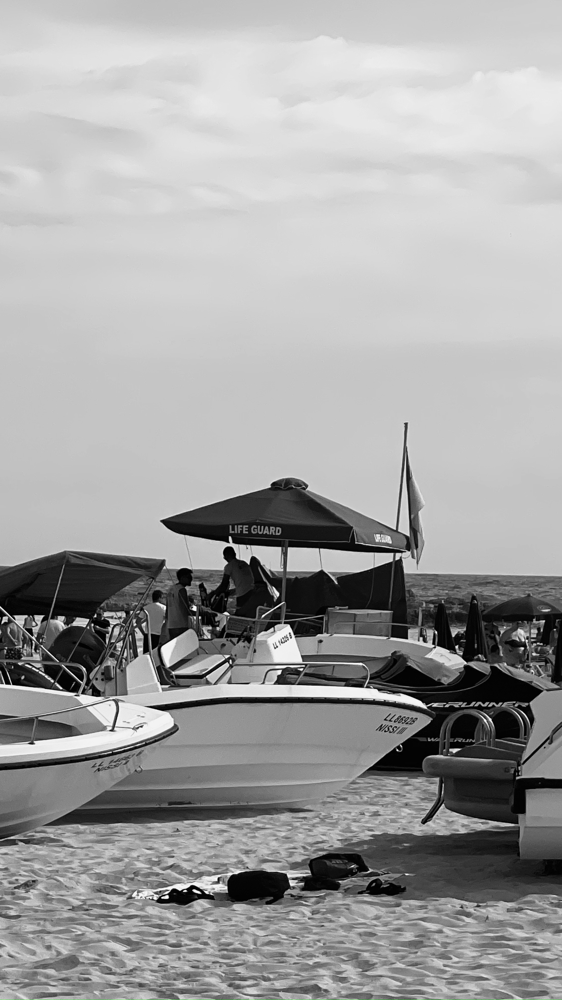
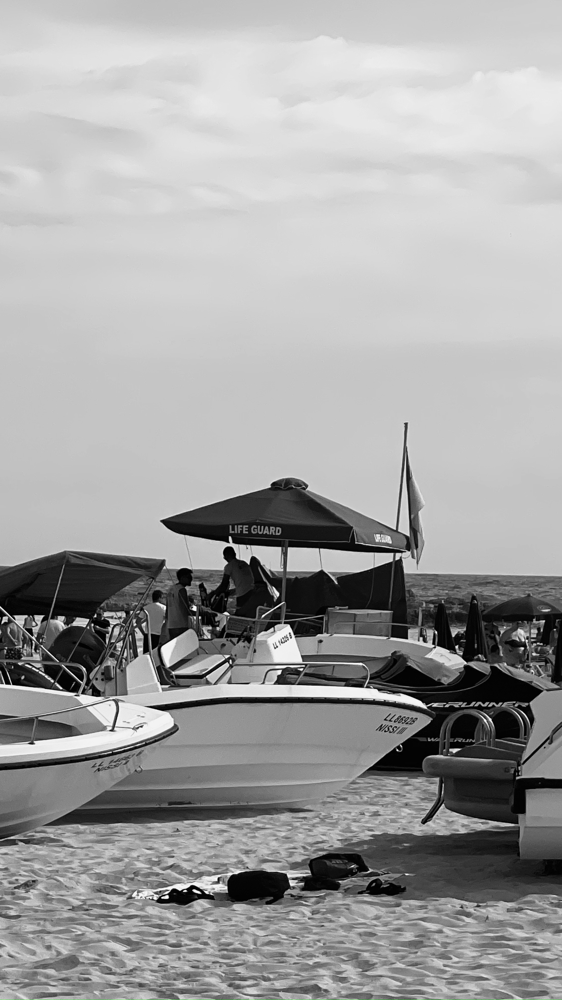
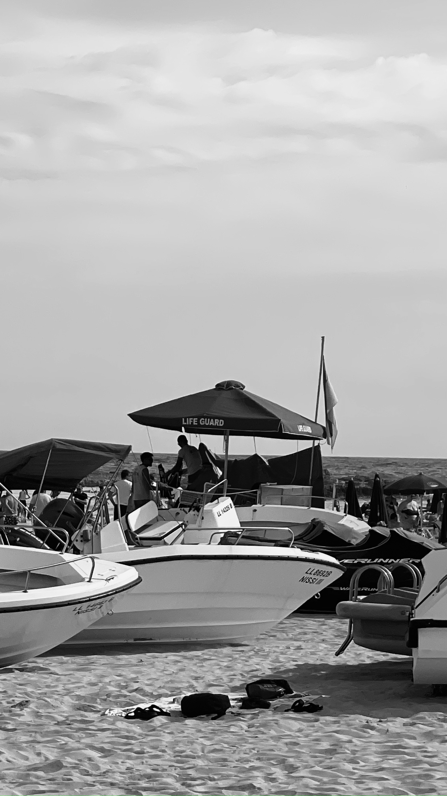
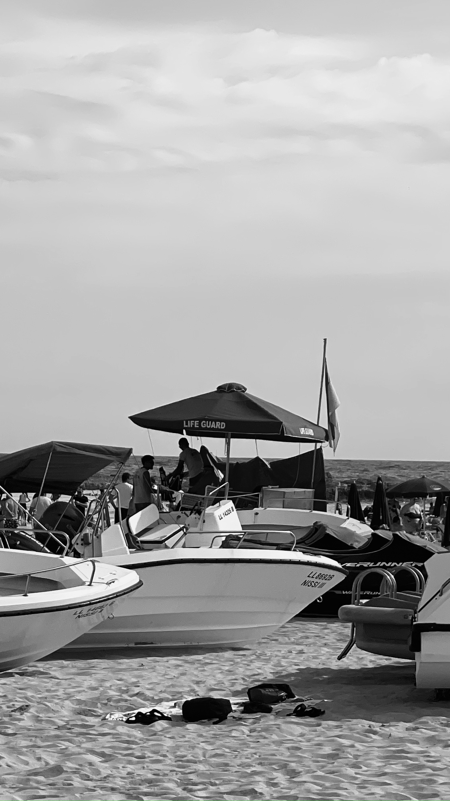

 

Nissi Beach is a popular beach in the resort of Ayia Napa, Cyprus. Nissi Beach has become a popular destination for clubbers following live programs transmitted through BBC's Radio 1 Roadshow during the summer tourist season since 2002. Nissi Bay Beach Bar is very popular with locals and tourists alike, playing music throughout the day and organizing events such as foam parties and catwalks with guest DJs. Water sports such as water-skiing and windsurfing are available. There are also two beach volleyball courts open to the public.